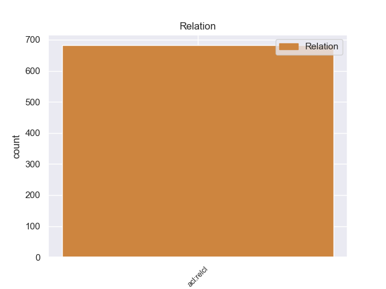
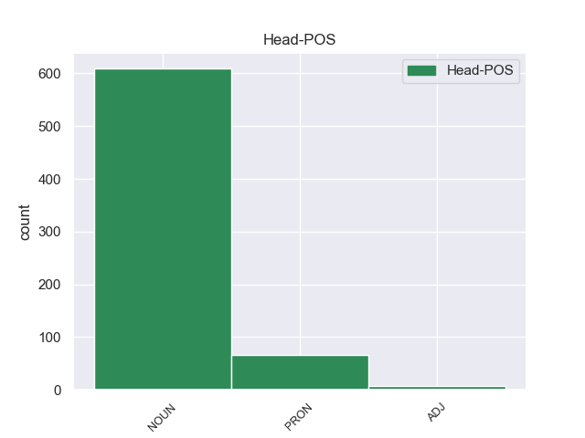

Distribution of features within this leaf



Agreement Rules sorted by frequency.
- When the dependent token is the nominal modifier(nmod) of the head token, and the head token is PRON and the dependent token is NOUN.
1 La _ _ _ _ 0 _ _ _
2 capitale _ _ _ _ 0 _ _ _
3 di _ _ _ _ 0 _ _ _
4 Haiti _ _ _ _ 0 _ _ _
5 è _ _ _ _ 0 _ _ _
6 Port-au-Prince _ _ _ _ 0 _ _ _
7 Haiti _ _ _ _ 0 _ _ _
8 è _ _ _ _ 0 _ _ _
9 uno uno PRON PI Gender=Masc|Number=Sing|PronType=Ind 0 _ _ _
10 di _ _ _ _ 0 _ _ _
11 i _ _ _ _ 0 _ _ _
12 paesi paese NOUN S Gender=Masc|Number=Plur 9 nmod 9:nmod:di _
13 più _ _ _ _ 0 _ _ _
14 poveri _ _ _ _ 0 _ _ _
15 di _ _ _ _ 0 _ _ _
16 il _ _ _ _ 0 _ _ _
17 mondo _ _ _ _ 0 _ _ _
18 : _ _ _ _ 0 _ _ _
Disagree Examples:
1 Si _ _ _ _ 0 _ _ _
2 tratta _ _ _ _ 0 _ _ _
3 di _ _ _ _ 0 _ _ _
4 lo _ _ _ _ 0 _ _ _
5 " _ _ _ _ 0 _ _ _
6 Stonit _ _ _ _ 0 _ _ _
7 " _ _ _ _ 0 _ _ _
8 , _ _ _ _ 0 _ _ _
9 prodotto _ _ _ _ 0 _ _ _
10 da _ _ _ _ 0 _ _ _
11 Stone _ _ _ _ 0 _ _ _
12 Italia _ _ _ _ 0 _ _ _
13 , _ _ _ _ 0 _ _ _
14 che _ _ _ _ 0 _ _ _
15 , _ _ _ _ 0 _ _ _
16 oltre _ _ _ _ 0 _ _ _
17 a _ _ _ _ 0 _ _ _
18 superfici _ _ _ _ 0 _ _ _
19 che _ _ _ _ 0 _ _ _
20 ricordano _ _ _ _ 0 _ _ _
21 quelle quello PRON PD Gender=Fem|Number=Plur|PronType=Dem 0 _ _ _
22 di _ _ _ _ 0 _ _ _
23 il _ _ _ _ 0 _ _ _
24 granito granito NOUN S Gender=Masc|Number=Sing 21 nmod 21:nmod:di _
25 ( _ _ _ _ 0 _ _ _
26 anche _ _ _ _ 0 _ _ _
27 in _ _ _ _ 0 _ _ _
28 fatto _ _ _ _ 0 _ _ _
29 di _ _ _ _ 0 _ _ _
30 durezza _ _ _ _ 0 _ _ _
31 ) _ _ _ _ 0 _ _ _
32 , _ _ _ _ 0 _ _ _
33 offre _ _ _ _ 0 _ _ _
34 tinte _ _ _ _ 0 _ _ _
35 unite _ _ _ _ 0 _ _ _
36 insolite _ _ _ _ 0 _ _ _
37 , _ _ _ _ 0 _ _ _
38 come _ _ _ _ 0 _ _ _
39 l' _ _ _ _ 0 _ _ _
40 azzurro _ _ _ _ 0 _ _ _
41 , _ _ _ _ 0 _ _ _
42 il _ _ _ _ 0 _ _ _
43 verde _ _ _ _ 0 _ _ _
44 , _ _ _ _ 0 _ _ _
45 il _ _ _ _ 0 _ _ _
46 grigio _ _ _ _ 0 _ _ _
47 pastello _ _ _ _ 0 _ _ _
48 , _ _ _ _ 0 _ _ _
49 il _ _ _ _ 0 _ _ _
50 nero _ _ _ _ 0 _ _ _
51 e _ _ _ _ 0 _ _ _
52 versioni _ _ _ _ 0 _ _ _
53 molto _ _ _ _ 0 _ _ _
54 speciali _ _ _ _ 0 _ _ _
55 . _ _ _ _ 0 _ _ _
1 Niente niente PRON PI Gender=Masc|Number=Sing|PronType=Ind 0 _ _ _
2 di _ _ _ _ 0 _ _ _
3 nuovo _ _ _ _ 0 _ _ _
4 , _ _ _ _ 0 _ _ _
5 in _ _ _ _ 0 _ _ _
6 sostanza sostanza NOUN S Gender=Fem|Number=Sing 1 nmod 1:nmod:in SpaceAfter=No
7 , _ _ _ _ 0 _ _ _
8 sotto _ _ _ _ 0 _ _ _
9 il _ _ _ _ 0 _ _ _
10 cielo _ _ _ _ 0 _ _ _
11 di _ _ _ _ 0 _ _ _
12 la _ _ _ _ 0 _ _ _
13 ' _ _ _ _ 0 _ _ _
14 terra _ _ _ _ 0 _ _ _
15 di _ _ _ _ 0 _ _ _
16 le _ _ _ _ 0 _ _ _
17 aquile _ _ _ _ 0 _ _ _
18 ' _ _ _ _ 0 _ _ _
19 , _ _ _ _ 0 _ _ _
20 ma _ _ _ _ 0 _ _ _
21 le _ _ _ _ 0 _ _ _
22 dimensioni _ _ _ _ 0 _ _ _
23 di _ _ _ _ 0 _ _ _
24 la _ _ _ _ 0 _ _ _
25 stangata _ _ _ _ 0 _ _ _
26 questa _ _ _ _ 0 _ _ _
27 volta _ _ _ _ 0 _ _ _
28 sono _ _ _ _ 0 _ _ _
29 colossali _ _ _ _ 0 _ _ _
30 . _ _ _ _ 0 _ _ _
1 I _ _ _ _ 0 _ _ _
2 finanzieri _ _ _ _ 0 _ _ _
3 marcianisani _ _ _ _ 0 _ _ _
4 hanno _ _ _ _ 0 _ _ _
5 iniziato _ _ _ _ 0 _ _ _
6 ad _ _ _ _ 0 _ _ _
7 indagare _ _ _ _ 0 _ _ _
8 tra _ _ _ _ 0 _ _ _
9 il _ _ _ _ 0 _ _ _
10 2008 _ _ _ _ 0 _ _ _
11 e _ _ _ _ 0 _ _ _
12 il _ _ _ _ 0 _ _ _
13 2009 _ _ _ _ 0 _ _ _
14 , _ _ _ _ 0 _ _ _
15 dopo _ _ _ _ 0 _ _ _
16 che _ _ _ _ 0 _ _ _
17 l' _ _ _ _ 0 _ _ _
18 Agenzia _ _ _ _ 0 _ _ _
19 di _ _ _ _ 0 _ _ _
20 le _ _ _ _ 0 _ _ _
21 Entrate _ _ _ _ 0 _ _ _
22 , _ _ _ _ 0 _ _ _
23 ed _ _ _ _ 0 _ _ _
24 in _ _ _ _ 0 _ _ _
25 seguito _ _ _ _ 0 _ _ _
26 Equitalia _ _ _ _ 0 _ _ _
27 , _ _ _ _ 0 _ _ _
28 avevano _ _ _ _ 0 _ _ _
29 contestato _ _ _ _ 0 _ _ _
30 con _ _ _ _ 0 _ _ _
31 tanto tanto PRON PI Gender=Masc|Number=Sing|PronType=Ind 0 _ _ _
32 di _ _ _ _ 0 _ _ _
33 cartelle cartella NOUN S Gender=Fem|Number=Plur 31 nmod 31:nmod:di _
34 esattoriali _ _ _ _ 0 _ _ _
35 a _ _ _ _ 0 _ _ _
36 la _ _ _ _ 0 _ _ _
37 società _ _ _ _ 0 _ _ _
38 di _ _ _ _ 0 _ _ _
39 Tornatore _ _ _ _ 0 _ _ _
40 il _ _ _ _ 0 _ _ _
41 mancato _ _ _ _ 0 _ _ _
42 pagamento _ _ _ _ 0 _ _ _
43 di _ _ _ _ 0 _ _ _
44 1,6 _ _ _ _ 0 _ _ _
45 milioni _ _ _ _ 0 _ _ _
46 di _ _ _ _ 0 _ _ _
47 euro _ _ _ _ 0 _ _ _
48 . _ _ _ _ 0 _ _ _
1 “ _ _ _ _ 0 _ _ _
2 L’ _ _ _ _ 0 _ _ _
3 articolo _ _ _ _ 0 _ _ _
4 non _ _ _ _ 0 _ _ _
5 esalta _ _ _ _ 0 _ _ _
6 certo _ _ _ _ 0 _ _ _
7 lo _ _ _ _ 0 _ _ _
8 schizofrenico _ _ _ _ 0 _ _ _
9 in _ _ _ _ 0 _ _ _
10 questione _ _ _ _ 0 _ _ _
11 , _ _ _ _ 0 _ _ _
12 è _ _ _ _ 0 _ _ _
13 solo _ _ _ _ 0 _ _ _
14 un _ _ _ _ 0 _ _ _
15 pretesto _ _ _ _ 0 _ _ _
16 per _ _ _ _ 0 _ _ _
17 sottolineare _ _ _ _ 0 _ _ _
18 il _ _ _ _ 0 _ _ _
19 grado _ _ _ _ 0 _ _ _
20 di _ _ _ _ 0 _ _ _
21 assuefazione _ _ _ _ 0 _ _ _
22 a _ _ _ _ 0 _ _ _
23 tutto tutto PRON PI Gender=Masc|Number=Sing|PronType=Ind 0 _ _ _
24 , _ _ _ _ 0 _ _ _
25 anche _ _ _ _ 0 _ _ _
26 a _ _ _ _ 0 _ _ _
27 le _ _ _ _ 0 _ _ _
28 evidenti _ _ _ _ 0 _ _ _
29 follie follia NOUN S Gender=Fem|Number=Plur 23 nmod 23:nmod:a|34:nsubj:pass SpaceAfter=No
30 , _ _ _ _ 0 _ _ _
31 che _ _ _ _ 0 _ _ _
32 vengono _ _ _ _ 0 _ _ _
33 “ _ _ _ _ 0 _ _ _
34 assorbite _ _ _ _ 0 _ _ _
35 ” _ _ _ _ 0 _ _ _
36 come _ _ _ _ 0 _ _ _
37 se _ _ _ _ 0 _ _ _
38 non _ _ _ _ 0 _ _ _
39 fossero _ _ _ _ 0 _ _ _
40 nemmeno _ _ _ _ 0 _ _ _
41 accadute _ _ _ _ 0 _ _ _
42 . _ _ _ _ 0 _ _ _
1 Le _ _ _ _ 0 _ _ _
2 sue _ _ _ _ 0 _ _ _
3 opere _ _ _ _ 0 _ _ _
4 teatrali _ _ _ _ 0 _ _ _
5 sono _ _ _ _ 0 _ _ _
6 state _ _ _ _ 0 _ _ _
7 tradotte _ _ _ _ 0 _ _ _
8 in _ _ _ _ 0 _ _ _
9 tutte _ _ _ _ 0 _ _ _
10 le _ _ _ _ 0 _ _ _
11 maggiori _ _ _ _ 0 _ _ _
12 lingue _ _ _ _ 0 _ _ _
13 esistenti _ _ _ _ 0 _ _ _
14 e _ _ _ _ 0 _ _ _
15 sono _ _ _ _ 0 _ _ _
16 messe _ _ _ _ 0 _ _ _
17 in _ _ _ _ 0 _ _ _
18 scena _ _ _ _ 0 _ _ _
19 più _ _ _ _ 0 _ _ _
20 spesso _ _ _ _ 0 _ _ _
21 di _ _ _ _ 0 _ _ _
22 quelle quello PRON PD Gender=Fem|Number=Plur|PronType=Dem 0 _ _ _
23 di _ _ _ _ 0 _ _ _
24 qualsiasi _ _ _ _ 0 _ _ _
25 altro _ _ _ _ 0 _ _ _
26 drammaturgo drammaturgo NOUN S Gender=Masc|Number=Sing 22 nmod 22:nmod:di SpaceAfter=No
27 . _ _ _ _ 0 _ _ _